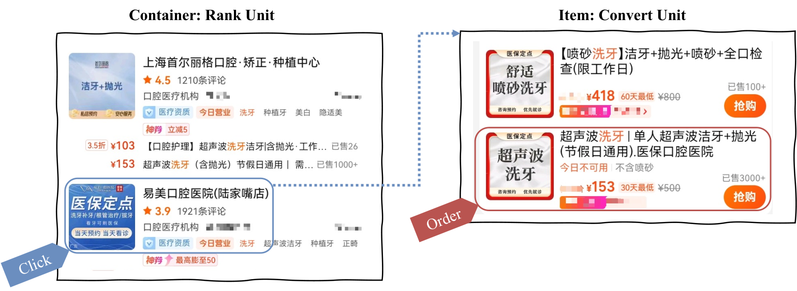
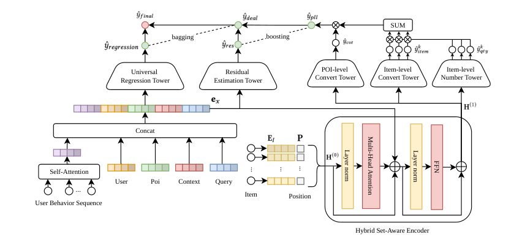

目录 · 9 节
1它到底在解决什么问题？2整体结构：三个部件各管一件事3集合编码器：为什么不能把券做平均？4分解预估：把一个大数拆成三个小数5残差和融合：券级信号太稀时怎么办？6实验：拆开到底带来了多少？7我认为它的局限8一个推荐或广告团队可以怎么试9一句话结论本地生活和直播电商的搜索广告里有一个结构上的错位：平台排序和计费的单位是一家门店或一个直播间，用户真正付钱买的却是店里的某张团购券或某件商品。用户点进一家口腔诊所，模型按“这家店能成交不少钱”给了高分，商家为这次点击付了高价；结果用户只买了一张便宜的洗牙券，没买种植牙，商家这笔广告费就亏了。美团这篇 RecSys 2026 论文的做法是把门店的预期成交额拆开估：先估用户会不会在店里下单，再估店里每张券被买的概率和件数，乘上券价加总。拆开以后每个子任务的标签都稳定得多，模型不再被偶尔一笔大单带偏。线上 13 天 A/B 里，每次搜索带来的广告收入提升 1.42%，方案已经全量上线。
做电商、本地生活或直播广告排序的团队值得读。论文只有四页，模块也不新，但它把一个很常见、又很少有人单独讲的问题说清楚了：排序单位和成交单位不一样时，直接回归“这次点击成交了多少钱”几乎学不动。核心思想一句话：门店级模型负责判断“会不会买”，券级模型负责判断“买哪张、买几件”，再用一个通用回归塔兜底那些券级信号太稀的样本。离线排序指标 XAUC 从最强基线的 0.8105 提到 0.8158，预测成交额与真实成交额之比从 0.79 左右拉到 0.9858，基本校准到位。
它到底在解决什么问题？
先把场景演一遍。用户在本地生活 App 里搜“洗牙”，返回两家口腔诊所的广告。平台要按“点击后预期成交额 × 点击率”之类的价值给它们排序和计费，所以每家店都需要一个点击后预期成交额（论文叫 GTV，即成交总额）的预估值。
| 门店（示意） | 店里的券 | 一周内 100 次点击后的真实成交 |
|---|---|---|
| 诊所 A | 洗牙 153 元、喷砂洗牙 418 元、种植牙 6000 元 | 95 次没买；4 次买洗牙；1 次买种植牙 |
| 诊所 B | 洗牙 99 元、美白 800 元 | 92 次没买；8 次买洗牙 |
如果直接拿“这次点击成交了多少钱”当标签回归，诊所 A 的标签几乎全是 0，偶尔冒出一个 153，极少数时候冒出一个 6000。那一笔种植牙会把整家店的平均成交额拉到 66 元左右，可它很可能只是偶然；下周没人买种植牙，平均值又掉到 6 元。因为梯度主要被少数大单主导，模型在这种标签上学到的排序很不稳定。
论文把难点归成三条，和这张表一一对应：
第一，标签方差大。同一家高价店，用户可能出于一时偏好只买了最便宜的券，单次点击的成交额并不代表这家店的真实价值。
第二，券级标签极稀。门店级的下单本来就比点击稀疏得多，具体到某一张券的下单就更少，直接在券级建模几乎没有监督信号。
第三，门店是一个会变的券集合。每家店挂的券种类、价格和折扣都不一样，还会随时上下架，模型要把“这个用户、这个 query、这家店”和“店里这一组券”的关系一起学进去。

常见的偷懒做法是把门店当成一个“超级商品”，用平均客单价乘上门店转化率，或者只预测最热门那张券的转化。论文的批评很直接：这两种做法都看不到店里有哪些券、用户会买哪张，高价券多的店会被低估，便宜券多的店会被高估。
整体结构：三个部件各管一件事

论文把整套方法叫 HGE（Hierarchical GTV Estimation，分层成交额预估）。数据从下往上走：
| 阶段 | 输入 | 产出 |
|---|---|---|
| 集合编码器 | 门店展示最多的前 10 张券 + 用户、门店、上下文、query 特征 | 每张券一个带上下文的表示 |
| 分解预估 | 券的表示 | 门店下单概率 × Σ（券的购买概率 × 件数 × 单价） |
| 残差修正 | 用户、门店、上下文、query 特征 | 补上不在前 10 张券里的成交 |
| 加权融合 | 修正后的分解预估 + 通用回归塔的预估 | 最终的点击后预期成交额 |
关键分工可以这样理解：分解预估负责把一个难学的大数拆成几个好学的小数，残差和融合负责在券级信号太弱时别让分解出来的结果跑偏。下面逐个拆开讲。
集合编码器：为什么不能把券做平均？
论文把这一步叫 HSAE（Hybrid Set-Aware Encoder，混合集合编码器）。它要回答的问题是：同一家店的同一组券，对不同用户、不同 query 的价值不一样。搜“洗牙”的用户，种植牙券再贵也很少被买；搜“种牙多少钱”的用户，洗牙券就只是陪衬。把店里所有券的 embedding 求平均，这种差别就没了。
具体做法是先取每家店展示次数最多的前 10 张券，每张券的 embedding 加上一个位置 embedding，让模型知道券在店里的展示顺序。接着过一层 Transformer 的多头自注意力，让券和券之间互相看到，学到“这张券在这组券里是便宜的那个还是贵的那个”。最后，在注意力层之后、FFN 之前，把用户、门店、上下文和 query 的特征拼进来。
为什么偏偏在注意力之后才拼这些特征？论文给的理由是一个取舍：拼得太早，券和券之间的比较信号会被大量外部特征冲淡；完全不拼，同一组券在不同“用户 × 门店 × query”组合下就只有一种表示。先让券在组内比一遍，再用外部特征去调，两头都照顾到。这个细节很小，但很实用：做集合建模的团队，常常会纠结用户特征该放在哪一层。
分解预估：把一个大数拆成三个小数
这是整篇论文最重要的部件，论文叫 PLL（Proxy-Label Learning，代理标签学习）。“代理标签”的意思是：不直接拿成交额当标签，而是拿“下没下单”“买了哪张券”“买了几件”这几个更稳定的信号分别监督。分解公式是：
是用户在这家店前 张券里买任何一张的概率； 是“已经下单”的前提下买第 张券的概率； 是买这张券的件数； 是券的单价，直接用已知价格，不用学。前两个用 sigmoid 输出，落在 0 到 1；件数用 softplus 输出，保证是正数。券级的两个塔对每张券共享同一套参数，所以新上架的券也能直接打分。
用开头的诊所 A 手算一遍（数字示意）。门店下单概率 0.05；下单的前提下，买洗牙、喷砂洗牙、种植牙的概率分别是 0.70、0.25、0.05；件数分别是 1.2、1、1。那么：
- 洗牙：0.70 × 1.2 × 153 ≈ 128.5
- 喷砂洗牙：0.25 × 1 × 418 = 104.5
- 种植牙：0.05 × 1 × 6000 = 300
加总约 533 元，再乘 0.05，点击后预期成交额约 26.7 元。这个数每天都差不多，因为它由“下单率、券的购买分布、件数”三个平滑的量决定，不会因为某天恰好有人买了种植牙就跳到 66 元。
为什么拆开就更稳？论文用了全方差公式做说明，直觉是：直接回归成交额，等于让模型学一个大部分是 0、偶尔冒出一个大数的目标；拆开以后，下单与否是一个 0/1 分类，件数在九成以上的下单里不超过 2 件，买哪张券是一个概率分布，每个子任务的输出范围都很窄，方差自然小得多。真正带来大方差的单价，被移到了已知的价格上，不再需要模型去学。拆开还有一个副作用：模型能区分“贵但很少人买”和“便宜但人人买”的券，这两种店在直接回归时可能得到一样的分。
残差和融合：券级信号太稀时怎么办？
只靠分解预估还有两个漏洞，论文用一个叫 RCEF（Residual Correction and Ensemble Fusion，残差修正与加权融合）的部件补上。
第一个漏洞是前 10 张券覆盖不全。用户可能买了店里排在第 11 张以后的券，这部分成交在分解公式里根本没有出现。所以加了一个轻量的残差塔，只看用户、门店、上下文、query 特征，输出一个修正量，加到分解预估上。
第二个漏洞是券级信号太稀。很多样本里，用户和店里的券几乎没有过互动，券级两个塔的输出基本靠猜。这时更可靠的是一个直接在门店级回归成交额的通用模型。论文用 DIN 加 DCN 搭了这个通用回归塔，再把它和修正后的分解预估加权求和：
是分解预估加残差修正， 是通用回归塔的预估。权重 不是固定的，而是由一个小门控网络按“用户 × 门店 × 上下文”给每个样本单独算。可以把它理解成：券级信号充足的样本多信分解，信号稀的样本多信门店级回归（示意：一家新店 可能只有 0.3，一家常被下单的老店可能到 0.8）。
训练时四个任务一起学：通用回归和件数用 Huber 损失（误差小时按平方算、误差大时按绝对值算，减弱大单的影响），门店下单和券的购买用交叉熵。权重是回归 1、门店下单 0.3、券购买和件数各 0.03。残差塔和门控网络没有单独的标签，按公式它们只能通过最终预估 和真实成交额之间的误差拿到梯度，所以回归项监督的应当是最终预估，而不只是通用回归塔（这是根据公式结构的理解）。
实验：拆开到底带来了多少？
离线数据来自美团广告日志，共 7.12 亿条样本、1.21 亿用户、94.9 万家门店。按时间切分，最后 5% 的样本做测试，避免用未来数据训练。看三个指标：XAUC 是随机抽两条样本，模型预估的成交额高低和真实成交额高低一致的比例，衡量排序；PCOC（预估与真实的比值）是预估总成交额除以真实总成交额，越接近 1 越说明校准得好；MAE（平均绝对误差）看单条样本预估偏了多少。
对比的基线有四个：WLR（把成交额回归改写成加权的二分类，YouTube 推荐里用来预估观看时长的老办法）；DLRM（DIN 做序列、DCN 做特征交叉的标准深度回归）；RankMixer（用 token 混合替换自注意力的排序结构）；CREAD（把连续值预估改成多分类、专门做校准的方法）。
| 方法 | XAUC | PCOC | MAE |
|---|---|---|---|
| WLR | 0.8043 | 0.7663 | 5.1453 |
| DLRM | 0.8051 | 0.7787 | 5.0453 |
| RankMixer | 0.8105 | 0.7528 | 5.1735 |
| CREAD | 0.8095 | 0.7921 | 5.0818 |
| HGE | 0.8158 | 0.9858 | 4.9915 |
XAUC 的提升看起来不大，比 RankMixer 高 0.0053。但在成交额这种噪声很大的目标上，四个基线彼此之间最多也只差 0.0062，所以这个幅度并不小。更明显的是校准：四个基线的预估总额都只有真实值的 75% 到 79%，HGE 到了 98.6%。这说明直接回归成交额时，模型会系统性地低估，而分解以后低估基本消失了。
消融实验拆出了每个部件的贡献：
| 版本 | XAUC | PCOC | MAE |
|---|---|---|---|
| 完整模型 | 0.8158 | 0.9858 | 4.9915 |
| 去掉集合编码器 | 0.8031 | 1.1012 | 5.2586 |
| 去掉分解预估 | 0.7873 | 0.4180 | 6.9875 |
| 去掉残差和融合 | 0.8146 | 0.9960 | 5.0130 |
去掉分解预估，XAUC 掉到 0.7873，比所有基线都差，PCOC 掉到 0.418，预估总额不到真实值的一半。这说明大部分收益来自“拆开估”这件事本身。去掉集合编码器，XAUC 掉了 0.0127，PCOC 反而高估到 1.10，说明把券平均掉以后，模型分不清店里哪张券会被买，容易把贵券的价值算多。去掉残差和融合只掉 0.0012，它的作用主要在误差上，MAE 从 5.01 降到 4.99。
线上做了 13 天 A/B，之前先跑了 A/A 确认两组没有差异。HGE 让 RPS（每次搜索带来的广告收入）提升 1.42%，95% 置信区间的下限是 0.80%，不含 0，说明提升是显著的。对搜索广告主流量来说，这个幅度足以支撑全量。
我认为它的局限
第一，残差和融合这一部件的证据很薄。去掉它，XAUC 只差 0.0012，PCOC 从 0.9858 变成 0.9960，反而更接近 1。支撑它的只有 MAE 的小幅改善。为这点改善多加一个残差塔和一个门控网络，复杂度和收益不太相称；如果能看到门控权重 在新店、老店上的分布，才好判断它是不是真在按信号多少切换。
第二，只有一份内部数据，基线偏低可能有校准因素。四个基线的 PCOC 都在 0.75 到 0.79，预估总额系统性地偏低。线上排序模型通常会在输出之后再做一次校准。基线如果没做这一步，PCOC 从 0.79 到 0.99 的差距里就有一部分来自校准方式，而不全是结构的功劳。
第三，价格被当成已知常数。券价在这个场景里确实是确定的，但大促、限时折扣、满减会让实际成交价和标价不一致。另外前 10 张券按展示次数选，是相对静态的集合；券频繁上下架的门店，集合编码器看到的可能是过时的券列表。
一个推荐或广告团队可以怎么试
- 先确认自己是不是同样的错位：排序单位是门店、直播间、店铺或商品集合，成交发生在里面的子商品上。统计一下点击后成交额的分布，如果 90% 以上是 0、少数是大额，就值得试。
- 从最便宜的版本开始：只加分解预估。门店下单概率塔复用现有的 CVR 模型，再加一个券级购买概率塔和一个件数塔，用已知价格相乘加总。离线先看 PCOC 是否明显更接近 1，XAUC 是否不掉。
- 有效再加集合编码器。重点看去掉平均池化以后，高价券多、低价券多的两类门店，预估是否分得更开。
- 最后才考虑残差和融合。先统计子商品集合之外的成交占比，占比很低就可以先不加；线上 A/B 时把收入指标和商家 ROI 一起看，避免平台收入涨了、商家的投入产出却变差。
一句话结论
当排序单位和成交单位不一样时，别直接回归成交额，先按用户的决策顺序把它拆成“会不会买、买哪个、买几件”，再乘上已知价格，这一步本身就贡献了大部分收益。
| 维度 | 评价 |
|---|---|
| 问题重要性 | 高。本地生活、直播、店铺类广告都有门店排序、子商品成交的错位 |
| 方法创新性 | 中。按用户决策顺序拆概率的思路和 ESMM 相近，新在把子商品集合和价格显式放进分解 |
| 实验证据 | 中。7 亿条样本加 13 天显著的 A/B，但只有一份内部数据，部分部件的消融偏弱 |
| 工程成本 | 中低。主要是加几个塔和一个单层 Transformer，价格是现成特征 |
| 是否值得尝试 | 值得。先只上分解预估，成本最低，收益最大 |
读完这篇，你觉得
夜读鸮记下了，谢谢你的反馈。
点一下即可，无需登录；再点一次撤回。只统计匿名次数，不记录你是谁。
讨论
欢迎补充实验细节、复现经验或不同看法。需 GitHub 登录。
正在加载讨论…